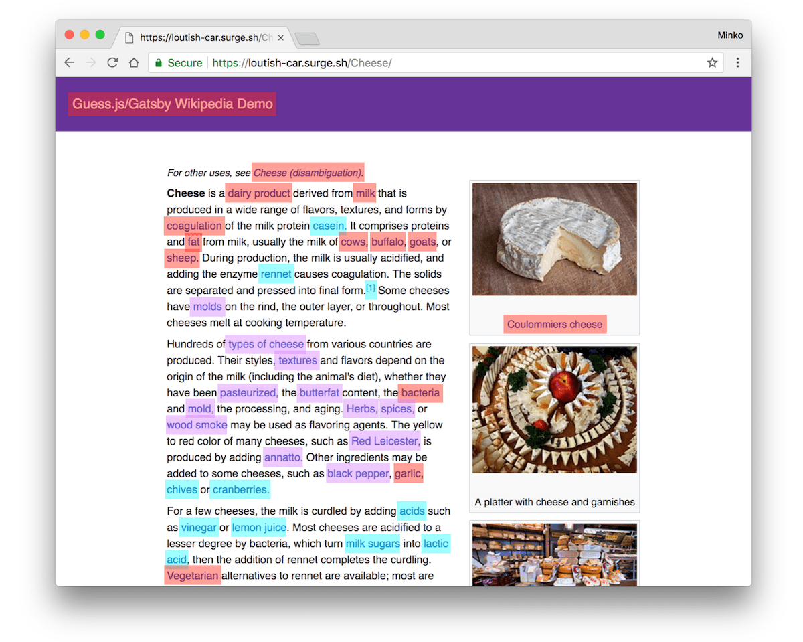
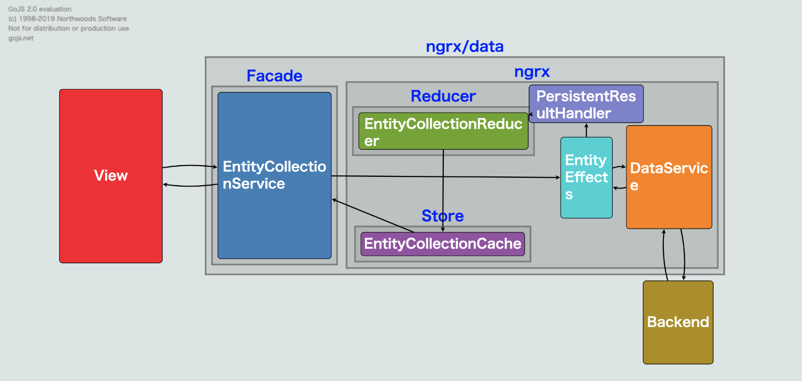
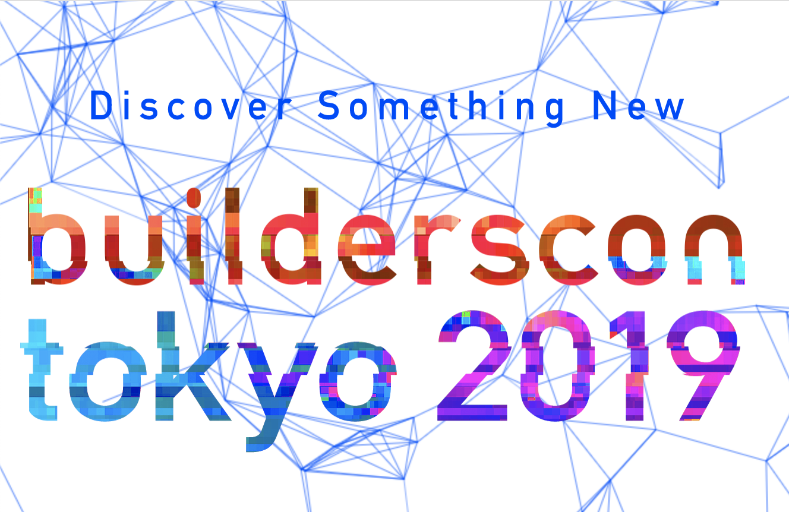
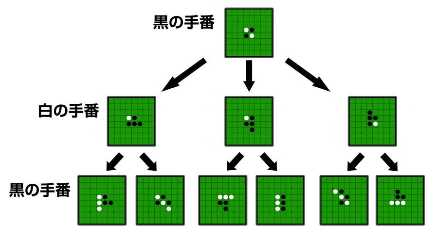
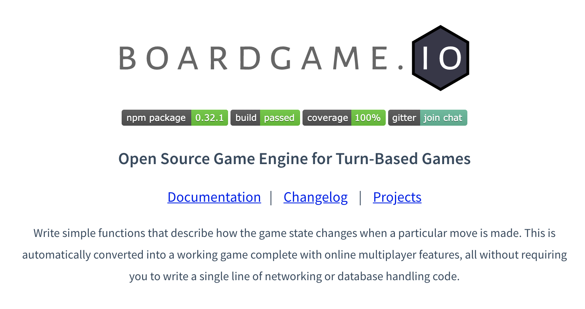
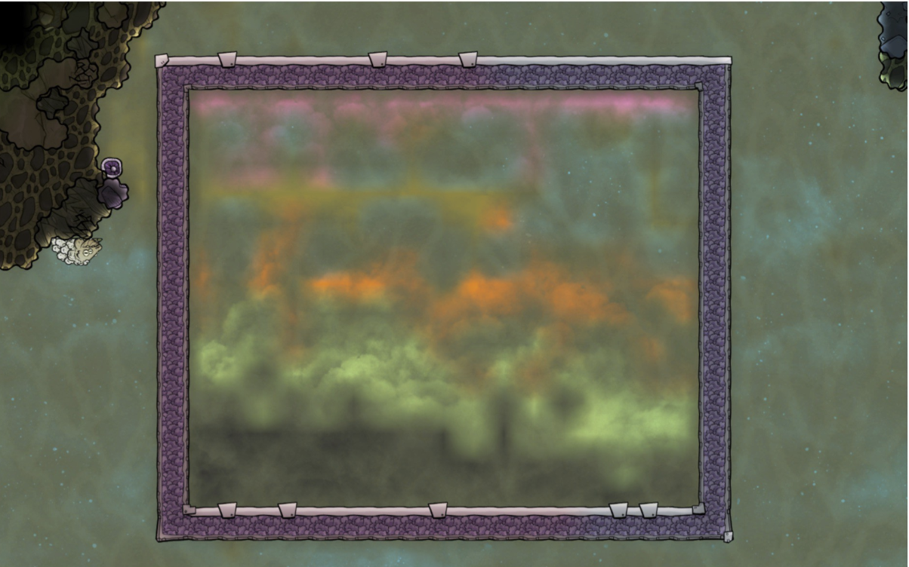

Angular Meetup & builderscon
参加レポート
2019/09/04 SPD若手LT会
花房亮
自己紹介
- Shopらんチーム所属
- 新卒2年目
フロントエンドエンジニア (?)
- AngularとちょっとだけJava
- 好きなエディタはVim
最近自炊を再開した
- もっと健康的な生活を送りたい

Angular Meetup
Minko Gechev
- GoogleのAngularチームの人
JiaLi Passion
- Angular Collaborator
- Zone.jsをつくった人
Tools for Fast Angular Applications
- WebアプリのフロントではJSのダウロードサイズを小さくするのは重要
- Lazy loading
- ルーティングごとに必要なモジュールだけを読み込む
- Preloading
- モジュールの先読み
- Angularは設定一つで有効になる
- Predictive Prefetching (Guess.js)
ngx-quicklink
スクロール位置に見えているリンクの
モジュールだけ先読みしてくれるすごいやつ

引用: https://blog.mgechev.com/2018/05/09/introducing-guess-js-data-driven-user-experiences-web/
Guess.js
- AngularだけでなくReactにも対応
- Google Analyticsを元に予測
- Markov Chainでグラフを作成し、RNNで学習
- ライブラリ自体、モデル共に軽量

引用: https://slides.com/jiali/deck-5#
My journey to ngrx/data
ngrxをラップしたライブラリ
- ngrxはAngularにおけるRedux
ngrx / RxJSのベストプラクティスが詰まっている
- ngrxを使い始めるならおすすめ
Angular Meetupを参加してみて
- 英語わからん
- 周辺情報は予習して参加したのである程度は聞きやすかった
- 新鮮な情報、ここでしか聞けない情報が聞けた
- 直接要望を伝えることができるのはつよい

builderscon
- 「知らなかった、を聞く」 技術者の祭典
- 前夜祭を含めると3日間開催された
技術の幅が広い
- ジャンルは何でもあり
発表の質が高い
- プロポーザルを出して選考を通らなければならない
特に面白いと思ったセッション
対戦ゲームに学ぶ、
フレームワークの設計技法とAIのアルゴリズム入門 by qsona- 対戦ゲームのルールを定式化
- 定式化するとゲームのAIに活かせる
- boadgame.ioに学ぶフレームワーク設計の勘所
対戦ゲームのルールを定式化
- ターン制のゲームは状態(局面)とMove(指し手)の組み合わせで表現できる
- 初期状態
- 終了条件と結果(勝敗)
- ただし、(将棋の場合)ルールが曖昧で完全に定式化できない
- 「最後の審判」(1997)

引用: https://www.webcyou.com/?p=6997
定式化するとゲーム木で表せる
- 状態(局面)がノード、Move(指し手)が枝
ゲームの面白さを表せるのではないか
- 一方的なゲーム(消化試合)
- 緊張感が持続するゲーム
引用: https://speakerdeck.com/qsona/game-model
引用: https://speakerdeck.com/qsona/game-model
AIアルゴリズムの話
- モンテカルロ木探索
- とりあえず、ゲーム終了まで何回も試行する
- 勝率が高い手を選ぶ
- いくつかの戦略を一定の割合で混ぜると強い
- 将棋は完全解析不能なので評価関数が命
boadgame.ioに学ぶフレームワーク設計の勘所
良いフレームワークとは
- 扱う対象は広いが広すぎない
- 対象の構造を適切に捉えていて頑健性がある
- エコシステムの充実
コンパイラをつくってみよう by DQNEO
- ライブコーディング形式のセッション
- 式を入力として演算結果の数値を主力するコンパイラ
- 例: '30 + 12' -> 42
- ソースコードを標準入力で受け取って、アセンブリを標準出力に吐く
引用: https://speakerdeck.com/dqneo/how-to-make-a-compiler
スライドによる解説とライブコーディングが織り交ぜられて
わかりやすいセッションだった引用: https://speakerdeck.com/dqneo/how-to-make-a-compiler
引用: https://speakerdeck.com/dqneo/how-to-make-a-compiler
引用: https://speakerdeck.com/dqneo/how-to-make-a-compiler
引用: https://speakerdeck.com/dqneo/how-to-make-a-compiler
引用: https://speakerdeck.com/dqneo/how-to-make-a-compiler
- 言語はなんでもよい
- コンパイラをつくりはじめるのに特殊な知識はいらない
- 作りながら学ぶというやり方がおすすめ
- 今ならchibiccを写経するのがいい

Oxygen Not Included (通称ONI)
- 物理学や科学のルールを持ち込んだシミュレーションゲーム
- 街づくり + サバイバルがコンセプト(例: シムシティ)
- の開発者が登壇
- ちなみに発表は同時通訳付きだった

引用: https://medium.com/schematics-not-included/what-makes-oxygen-not-included-special-d52c280205b3
様々な科学的要素が複雑に作用する
- 重力
- 熱伝導
- 状態変化(気体、液体、個体)
- 流体力学
- 疾病、ウィルス
- ...
ONIの難しさ・醍醐味 (=副作用)
- 基本的に全ての行為には副作用が発生する
- 例: 火力発電には二酸化炭素と熱が発生する
- 副作用を解決するために試行錯誤
- 仮説 → 実験 → 考察 の繰り返し
ゲームを通して自然と科学的思考が身につく
プログラミングに通づる面白さがある
ほかにも面白い(面白そうだった)発表がたくさんあった
- PHPでJVMをつくった人
- 自動作曲入門
- Kyash, メルペイのアーキテクチャ
- スーパーカミオカンデの開発裏話
- webpack / Babelがどう動いているか解説